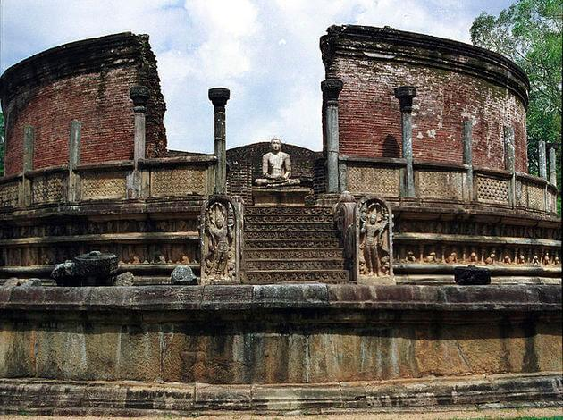

| LOCATION |
DISTANCE FROM CAPITAL |
HISTORICAL IMPORTANCE |
IMAGES |
| SIGIRYA |
4 h 15 min (177.9 km) via Ambepussa - Kurunegala
- Trincomalee Hwy/Ambepussa - Trincomalee Hwy/Colombo Rd/Kandy Rd/A6 |
The capital and the royal palace was abandoned after the king's death.
It was used as a Buddhist monastery until the 14th century. Sigiriya today is a UNESCO listed World Heritage Site.
It is one of the best preserved examples of ancient urban planning. |
|
| GALLE DUTCH FORT |
2 h 9 min (146.4 km) via Southern Expy/E01 |
However the fort underwent extensive modifications in the 17th century by the Dutch, making it one of the most important archeological,
architectural and historic monuments to illutrate the European influence in South East Asia between the 16th and 19th centuries. |
 |
| SRI DALADA MALIGAWA |
3 h 41 min (125.5 km) via Colombo - Kandy Rd/A1 |
Sri Dalada Maligawa or the Temple of the Sacred Tooth Relic is a Buddhist temple in the city of Kandy, Sri Lanka.
It is located in the royal palace complex of the former Kingdom of Kandy, which houses the relic of the tooth of the Buddha. Since ancient times,
the relic has played an important role in local politics because it is believed that whoever holds the relic holds the governance of the country
Kandy was the last capital of the Sri Lankan kings and is a World Heritage Site mainly due to the temple. |
 |
| POLANNARUWA |
5 h 19 min (225.3 km) via Ambepussa - Kurunegala
- Trincomalee Hwy/Ambepussa - Trincomalee Hwy/Colombo Rd/Kandy Rd/A6 |
Once a thriving, commercial capital of Ceylon (Sri Lanka's old name) an estimated 800 years ago,
the ancient city of Polonnaruwa is a part of UNESCO World Heritage sites.
This glorious city of that time is now one of the major historic sites in Sri Lanka with archaeological remains. |
 |